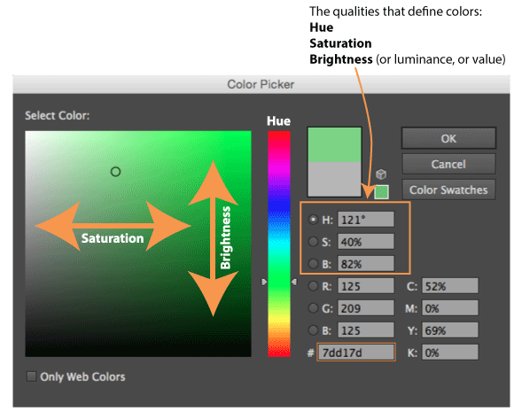
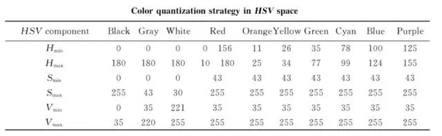
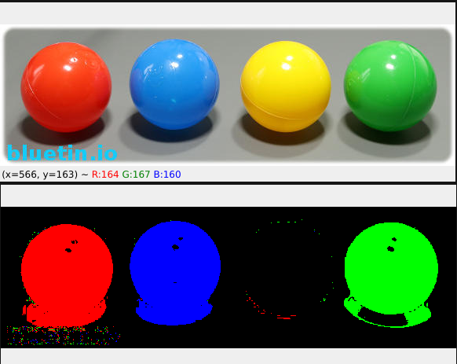
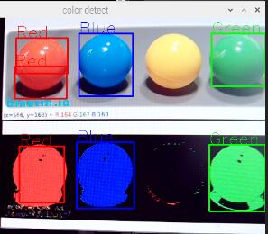

OpenCV Python 颜色检测
- categories
- >
- OpenCV
参考
- 用色彩空间做图像处理，让颜色提取更高效
- Contours : Getting Started
- Structural Analysis and Shape Descriptors
- Multiple Color Detection in Real-Time using Python-OpenCV
使用HSV（色相Hue, 饱和度Saturation, 明亮度Value, 有时也称为Brightness）色彩空间。HSV将颜色信息与亮度信息分开，减小了光线对特定颜色识别的影响。

颜色阈值参考

图像着色
提取蓝色：H通道选取100~124，S通道选取43~255，V通道选取35~255。
提取绿色：H通道选取35~77，S通道选取43~255，V通道选取35~255。
提取红色：H通道选取156~180和0~10（可能需要做两次运算，取相加结果），S通道选取43~255，V通道选取35~255。
实现代码:
import numpy as np
import cv2
img = cv2.imread("./ball.jpg")
img_hsv = cv2.cvtColor(img, cv2.COLOR_BGR2HSV)
blue_lower = np.array([100, 43, 35])
blue_higher = np.array([124, 255, 255])
green_lower = np.array([35, 43, 35])
green_higher = np.array([77, 255, 255])
red_lower_1 = np.array([0, 43, 35])
red_higher_1 = np.array([10, 255, 255])
red_lower_2 = np.array([156, 43, 35])
red_higher_2 = np.array([180, 255, 255])
blue_part = cv2.inRange(img_hsv, blue_lower, blue_higher)
green_part = cv2.inRange(img_hsv, green_lower, green_higher)
red_part_1 = cv2.inRange(img_hsv, red_lower_1, red_higher_1)
red_part_2 = cv2.inRange(img_hsv, red_lower_2, red_higher_2)
red_part = red_part_1 + red_part_2
blank_for_color = np.zeros(shape=img.shape, dtype=np.uint8)
#################################################
# 着色开始
def color_img(img, part, color):
for i in range(img.shape[0]):
for j in range(img.shape[1]):
if part[i, j] == 255:
img[i, j] = color
return img
blank_for_color = color_img(blank_for_color, blue_part, (255, 0, 0))
blank_for_color = color_img(blank_for_color, green_part, (0, 255, 0))
blank_for_color = color_img(blank_for_color, red_part, (0, 0, 255))
# 着色结束
#################################################
cv2.imshow('color', blank_for_color)
cv2.imshow('original', img)
cv2.waitKey(0)结果

实时颜色检测
由于摄像头的原因，红色可能检测不太准确（偏橘色），根据个人情况更改。
实现代码:
import numpy as np
import cv2
capture = cv2.VideoCapture(0)
red_lower_1 = np.array([150, 50, 35], np.uint8)
red_upper_1 = np.array([190, 255, 255], np.uint8)
red_lower_2 = np.array([0, 50, 35], np.uint8)
red_upper_2 = np.array([15, 255, 255], np.uint8)
green_lower = np.array([30, 50, 35], np.uint8)
green_upper = np.array([80, 255, 255], np.uint8)
blue_lower = np.array([90, 50, 35], np.uint8)
blue_upper = np.array([130, 255, 255], np.uint8)
AREA = 2500 # 50x50
while True:
_, frame = capture.read()
hsv_frame = cv2.cvtColor(frame, cv2.COLOR_BGR2HSV)
red_mask_1 = cv2.inRange(hsv_frame, red_lower_1, red_upper_1)
red_mask_2 = cv2.inRange(hsv_frame, red_lower_2, red_upper_2)
green_mask = cv2.inRange(hsv_frame, green_lower, green_upper)
blue_mask = cv2.inRange(hsv_frame, blue_lower, blue_upper)
# 腐蚀膨胀卷积核
kernel = np.ones((5, 5), "uint8")
# 红色
red_mask_1 = cv2.erode(red_mask_1, kernel)
red_mask_1 = cv2.dilate(red_mask_1, kernel)
res_red_1 = cv2.bitwise_and(frame, frame, mask=red_mask_1)
red_mask_2 = cv2.erode(red_mask_2, kernel)
red_mask_2 = cv2.dilate(red_mask_2, kernel)
res_red_2 = cv2.bitwise_and(frame, frame, mask=red_mask_2)
# 绿色
green_mask = cv2.erode(green_mask, kernel)
green_mask = cv2.dilate(green_mask, kernel)
res_green = cv2.bitwise_and(frame, frame, mask=green_mask)
# For blue color
blue_mask = cv2.erode(blue_mask, kernel)
blue_mask = cv2.dilate(blue_mask, kernel)
res_blue = cv2.bitwise_and(frame, frame, mask=blue_mask)
# 画红色边框
contours, _ = cv2.findContours(red_mask_1, cv2.RETR_TREE, cv2.CHAIN_APPROX_SIMPLE)
for pic, contour in enumerate(contours):
area = cv2.contourArea(contour)
if(area > AREA):
x, y, w, h = cv2.boundingRect(contour)
frame = cv2.rectangle(frame, (x, y), (x + w, y + h), (0, 0, 255), 2)
cv2.putText(frame, "Red", (x, y), cv2.FONT_HERSHEY_SIMPLEX, 1.0, (0, 0, 255))
contours, _ = cv2.findContours(red_mask_2, cv2.RETR_TREE, cv2.CHAIN_APPROX_SIMPLE)
for pic, contour in enumerate(contours):
area = cv2.contourArea(contour)
if(area > AREA):
x, y, w, h = cv2.boundingRect(contour)
frame = cv2.rectangle(frame, (x, y), (x + w, y + h), (0, 0, 255), 2)
cv2.putText(frame, "Red", (x, y), cv2.FONT_HERSHEY_SIMPLEX, 1.0, (0, 0, 255))
# 画绿色边框
contours, _ = cv2.findContours(green_mask, cv2.RETR_TREE, cv2.CHAIN_APPROX_SIMPLE)
for pic, contour in enumerate(contours):
area = cv2.contourArea(contour)
if(area > AREA):
x, y, w, h = cv2.boundingRect(contour)
frame = cv2.rectangle(frame, (x, y), (x + w, y + h), (0, 255, 0), 2)
cv2.putText(frame, "Green", (x, y), cv2.FONT_HERSHEY_SIMPLEX, 1.0, (0, 255, 0))
# 画蓝色边框
contours, _ = cv2.findContours(blue_mask, cv2.RETR_TREE, cv2.CHAIN_APPROX_SIMPLE)
for pic, contour in enumerate(contours):
area = cv2.contourArea(contour)
if(area > AREA):
x, y, w, h = cv2.boundingRect(contour)
frame = cv2.rectangle(frame, (x, y), (x + w, y + h), (255, 0, 0), 2)
cv2.putText(frame, "Blue", (x, y), cv2.FONT_HERSHEY_SIMPLEX, 1.0, (255, 0, 0))
# 释放资源
cv2.imshow("color detect", frame)
if cv2.waitKey(10) & 0xFF == ord('q'):
break
capture.release()
cv2.destroyAllWindows()结果

comment:
- Valine
- LiveRe
- ChangYan